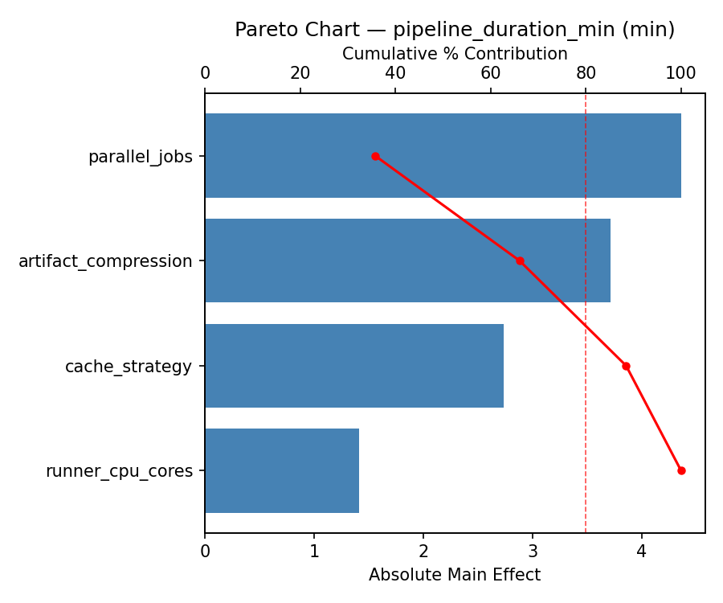
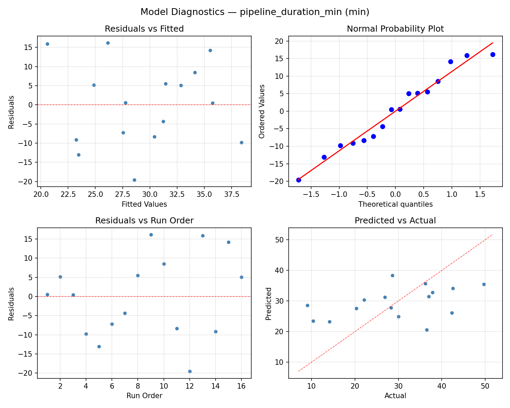
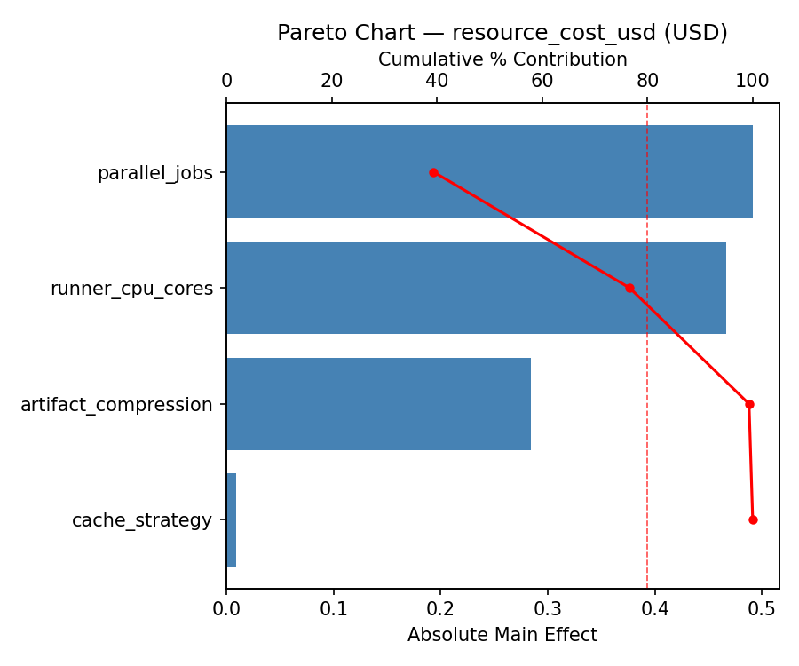
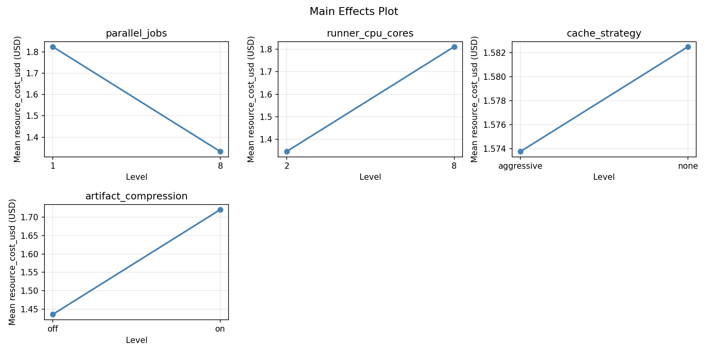
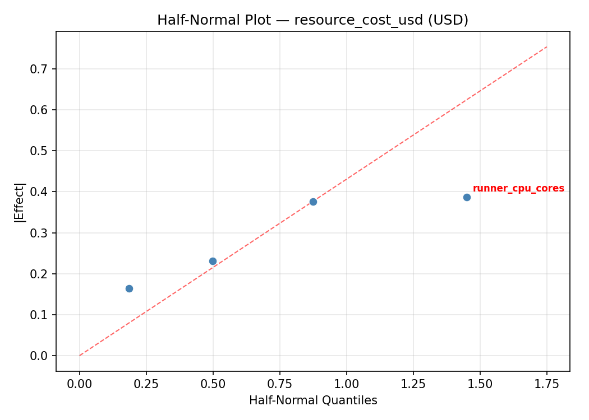
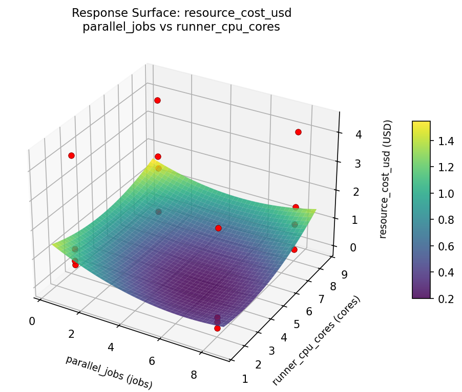

Summary
This experiment investigates ci/cd pipeline parallelism. Full factorial of parallel jobs, runner cores, cache strategy, and artifact compression for pipeline duration and cost.
The design varies 4 factors: parallel jobs (jobs), ranging from 1 to 8, runner cpu cores (cores), ranging from 2 to 8, cache strategy, ranging from none to aggressive, and artifact compression, ranging from off to on. The goal is to optimize 2 responses: pipeline duration min (min) (minimize) and resource cost usd (USD) (minimize). Fixed conditions held constant across all runs include ci platform = github_actions, repo size = medium.
A full factorial design was used to explore all 16 possible combinations of the 4 factors at two levels. This guarantees that every main effect and interaction can be estimated independently, at the cost of a larger experiment (16 runs).
Quadratic response surface models were fitted to capture potential curvature and factor interactions. The RSM contour plots below visualize how pairs of factors jointly affect each response.
Key Findings
For pipeline duration min, the most influential factors were parallel jobs (54.8%), artifact compression (22.0%), cache strategy (21.6%). The best observed value was 9.0 (at parallel jobs = 1, runner cpu cores = 8, cache strategy = aggressive).
For resource cost usd, the most influential factors were parallel jobs (52.9%), runner cpu cores (24.0%), artifact compression (18.1%). The best observed value was -0.03 (at parallel jobs = 8, runner cpu cores = 8, cache strategy = aggressive).
Recommended Next Steps
- Consider whether any fixed factors should be varied in a future study.
Experimental Setup
Factors
| Factor | Low | High | Unit |
|---|
parallel_jobs | 1 | 8 | jobs |
runner_cpu_cores | 2 | 8 | cores |
cache_strategy | none | aggressive | |
artifact_compression | off | on | |
Fixed: ci_platform = github_actions, repo_size = medium
Responses
| Response | Direction | Unit |
|---|
pipeline_duration_min | ↓ minimize | min |
resource_cost_usd | ↓ minimize | USD |
Configuration
{
"metadata": {
"name": "CI/CD Pipeline Parallelism",
"description": "Full factorial of parallel jobs, runner cores, cache strategy, and artifact compression for pipeline duration and cost"
},
"factors": [
{
"name": "parallel_jobs",
"levels": [
"1",
"8"
],
"type": "continuous",
"unit": "jobs"
},
{
"name": "runner_cpu_cores",
"levels": [
"2",
"8"
],
"type": "continuous",
"unit": "cores"
},
{
"name": "cache_strategy",
"levels": [
"none",
"aggressive"
],
"type": "categorical",
"unit": ""
},
{
"name": "artifact_compression",
"levels": [
"off",
"on"
],
"type": "categorical",
"unit": ""
}
],
"fixed_factors": {
"ci_platform": "github_actions",
"repo_size": "medium"
},
"responses": [
{
"name": "pipeline_duration_min",
"optimize": "minimize",
"unit": "min"
},
{
"name": "resource_cost_usd",
"optimize": "minimize",
"unit": "USD"
}
],
"settings": {
"operation": "full_factorial",
"test_script": "use_cases/77_cicd_pipeline_parallelism/sim.sh"
}
}
Experimental Matrix
The Full Factorial Design produces 16 runs. Each row is one experiment with specific factor settings.
| Run | parallel_jobs | runner_cpu_cores | cache_strategy | artifact_compression |
|---|
| 1 | 1 | 8 | aggressive | on |
| 2 | 8 | 2 | none | on |
| 3 | 1 | 8 | none | on |
| 4 | 1 | 8 | aggressive | off |
| 5 | 8 | 8 | aggressive | off |
| 6 | 8 | 2 | aggressive | off |
| 7 | 8 | 8 | none | off |
| 8 | 8 | 2 | none | off |
| 9 | 1 | 2 | none | on |
| 10 | 1 | 2 | aggressive | off |
| 11 | 8 | 8 | none | on |
| 12 | 8 | 8 | aggressive | on |
| 13 | 1 | 8 | none | off |
| 14 | 8 | 2 | aggressive | on |
| 15 | 1 | 2 | none | off |
| 16 | 1 | 2 | aggressive | on |
Step-by-Step Workflow
1
Preview the design
$ doe info --config use_cases/77_cicd_pipeline_parallelism/config.json
2
Generate the runner script
$ doe generate --config use_cases/77_cicd_pipeline_parallelism/config.json \
--output use_cases/77_cicd_pipeline_parallelism/results/run.sh --seed 42
3
Execute the experiments
$ bash use_cases/77_cicd_pipeline_parallelism/results/run.sh
4
Analyze results
$ doe analyze --config use_cases/77_cicd_pipeline_parallelism/config.json
5
Get optimization recommendations
$ doe optimize --config use_cases/77_cicd_pipeline_parallelism/config.json
6
Multi-objective optimization
With 2 competing responses, use --multi to find the best compromise via Derringer–Suich desirability.
$ doe optimize --config use_cases/77_cicd_pipeline_parallelism/config.json --multi
7
Generate the HTML report
$ doe report --config use_cases/77_cicd_pipeline_parallelism/config.json \
--output use_cases/77_cicd_pipeline_parallelism/results/report.html
Features Exercised
| Feature | Value |
|---|
| Design type | full_factorial |
| Factor types | continuous (2), categorical (2) |
| Arg style | double-dash |
| Responses | 2 (pipeline_duration_min ↓, resource_cost_usd ↓) |
| Total runs | 16 |
Analysis Results
Generated from actual experiment runs using the DOE Helper Tool.
Response: pipeline_duration_min
Top factors: parallel_jobs (54.8%), artifact_compression (22.0%), cache_strategy (21.6%).
ANOVA
| Source | DF | SS | MS | F | p-value |
|---|
| Source | DF | SS | MS | F | p-value |
| parallel_jobs | 1 | 706.2306 | 706.2306 | 7.161 | 0.0440 |
| runner_cpu_cores | 1 | 0.6006 | 0.6006 | 0.006 | 0.9408 |
| cache_strategy | 1 | 109.7256 | 109.7256 | 1.113 | 0.3398 |
| artifact_compression | 1 | 113.9556 | 113.9556 | 1.155 | 0.3315 |
| parallel_jobs*runner_cpu_cores | 1 | 53.6556 | 53.6556 | 0.544 | 0.4939 |
| parallel_jobs*cache_strategy | 1 | 22.3256 | 22.3256 | 0.226 | 0.6543 |
| parallel_jobs*artifact_compression | 1 | 298.4256 | 298.4256 | 3.026 | 0.1424 |
| runner_cpu_cores*cache_strategy | 1 | 216.8256 | 216.8256 | 2.198 | 0.1983 |
| runner_cpu_cores*artifact_compression | 1 | 50.0556 | 50.0556 | 0.508 | 0.5081 |
| cache_strategy*artifact_compression | 1 | 70.1406 | 70.1406 | 0.711 | 0.4375 |
| Error | 5 | 493.1281 | 98.6256 | | |
| Total | 15 | 2135.0694 | 142.3380 | | |
Pareto Chart

Main Effects Plot

Normal Probability Plot of Effects

Half-Normal Plot of Effects

Model Diagnostics

Response: resource_cost_usd
Top factors: parallel_jobs (52.9%), runner_cpu_cores (24.0%), artifact_compression (18.1%).
ANOVA
| Source | DF | SS | MS | F | p-value |
|---|
| Source | DF | SS | MS | F | p-value |
| parallel_jobs | 1 | 4.8510 | 4.8510 | 3.974 | 0.1028 |
| runner_cpu_cores | 1 | 0.9950 | 0.9950 | 0.815 | 0.4080 |
| cache_strategy | 1 | 0.0431 | 0.0431 | 0.035 | 0.8584 |
| artifact_compression | 1 | 0.5663 | 0.5663 | 0.464 | 0.5260 |
| parallel_jobs*runner_cpu_cores | 1 | 6.5921 | 6.5921 | 5.401 | 0.0677 |
| parallel_jobs*cache_strategy | 1 | 3.1952 | 3.1952 | 2.618 | 0.1666 |
| parallel_jobs*artifact_compression | 1 | 8.8655 | 8.8655 | 7.264 | 0.0430 |
| runner_cpu_cores*cache_strategy | 1 | 3.9701 | 3.9701 | 3.253 | 0.1312 |
| runner_cpu_cores*artifact_compression | 1 | 1.7490 | 1.7490 | 1.433 | 0.2849 |
| cache_strategy*artifact_compression | 1 | 0.0077 | 0.0077 | 0.006 | 0.9399 |
| Error | 5 | 6.1027 | 1.2205 | | |
| Total | 15 | 36.9374 | 2.4625 | | |
Pareto Chart

Main Effects Plot

Normal Probability Plot of Effects

Half-Normal Plot of Effects

Model Diagnostics

Response Surface Plots
3D surfaces fitted with quadratic RSM. Red dots are observed data points.
pipeline duration min parallel jobs vs runner cpu cores

resource cost usd parallel jobs vs runner cpu cores

Multi-Objective Optimization
When responses compete, Derringer–Suich desirability finds the best compromise.
Each response is scaled to a 0–1 desirability, then combined via a weighted geometric mean.
Overall Desirability
D = 0.8014
Per-Response Desirability
| Response | Weight | Desirability | Predicted | Dir |
|---|
pipeline_duration_min |
1.5 |
|
14.10 0.8406 14.10 min |
↓ |
resource_cost_usd |
1.0 |
|
0.98 0.7459 0.98 USD |
↓ |
Recommended Settings
| Factor | Value |
|---|
parallel_jobs | 8 jobs |
runner_cpu_cores | 8 cores |
cache_strategy | aggressive |
artifact_compression | on |
Source: from observed run #14
Trade-off Summary
Sacrifice = how much worse than single-objective best.
| Response | Predicted | Best Observed | Sacrifice |
|---|
resource_cost_usd | 0.98 | -0.03 | +1.01 |
Top 3 Runs by Desirability
| Run | D | Factor Settings |
|---|
| #6 | 0.7031 | parallel_jobs=1, runner_cpu_cores=8, cache_strategy=none, artifact_compression=off |
| #2 | 0.5994 | parallel_jobs=1, runner_cpu_cores=8, cache_strategy=aggressive, artifact_compression=off |
Model Quality
| Response | R² | Type |
|---|
resource_cost_usd | 0.1756 | linear |
Full Multi-Objective Output
============================================================
MULTI-OBJECTIVE OPTIMIZATION
Method: Derringer-Suich Desirability Function
============================================================
Overall desirability: D = 0.8014
Response Weight Desirability Predicted Direction
---------------------------------------------------------------------
pipeline_duration_min 1.5 0.8406 14.10 min ↓
resource_cost_usd 1.0 0.7459 0.98 USD ↓
Recommended settings:
parallel_jobs = 8 jobs
runner_cpu_cores = 8 cores
cache_strategy = aggressive
artifact_compression = on
(from observed run #14)
Trade-off summary:
pipeline_duration_min: 14.10 (best observed: 9.00, sacrifice: +5.10)
resource_cost_usd: 0.98 (best observed: -0.03, sacrifice: +1.01)
Model quality:
pipeline_duration_min: R² = 0.2508 (linear)
resource_cost_usd: R² = 0.1756 (linear)
Top 3 observed runs by overall desirability:
1. Run #14 (D=0.8014): parallel_jobs=8, runner_cpu_cores=8, cache_strategy=aggressive, artifact_compression=on
2. Run #6 (D=0.7031): parallel_jobs=1, runner_cpu_cores=8, cache_strategy=none, artifact_compression=off
3. Run #2 (D=0.5994): parallel_jobs=1, runner_cpu_cores=8, cache_strategy=aggressive, artifact_compression=off
Full Analysis Output
=== Main Effects: pipeline_duration_min ===
Factor Effect Std Error % Contribution
--------------------------------------------------------------
parallel_jobs 13.2875 2.9826 54.8%
artifact_compression -5.3375 2.9826 22.0%
cache_strategy -5.2375 2.9826 21.6%
runner_cpu_cores 0.3875 2.9826 1.6%
=== ANOVA Table: pipeline_duration_min ===
Source DF SS MS F p-value
-----------------------------------------------------------------------------
parallel_jobs 1 706.2306 706.2306 7.161 0.0440
runner_cpu_cores 1 0.6006 0.6006 0.006 0.9408
cache_strategy 1 109.7256 109.7256 1.113 0.3398
artifact_compression 1 113.9556 113.9556 1.155 0.3315
parallel_jobs*runner_cpu_cores 1 53.6556 53.6556 0.544 0.4939
parallel_jobs*cache_strategy 1 22.3256 22.3256 0.226 0.6543
parallel_jobs*artifact_compression 1 298.4256 298.4256 3.026 0.1424
runner_cpu_cores*cache_strategy 1 216.8256 216.8256 2.198 0.1983
runner_cpu_cores*artifact_compression 1 50.0556 50.0556 0.508 0.5081
cache_strategy*artifact_compression 1 70.1406 70.1406 0.711 0.4375
Error 5 493.1281 98.6256
Total 15 2135.0694 142.3380
=== Interaction Effects: pipeline_duration_min ===
Factor A Factor B Interaction % Contribution
------------------------------------------------------------------------
parallel_jobs artifact_compression -8.6375 29.0%
runner_cpu_cores cache_strategy 7.3625 24.7%
cache_strategy artifact_compression 4.1875 14.1%
parallel_jobs runner_cpu_cores -3.6625 12.3%
runner_cpu_cores artifact_compression -3.5375 11.9%
parallel_jobs cache_strategy 2.3625 7.9%
=== Summary Statistics: pipeline_duration_min ===
parallel_jobs:
Level N Mean Std Min Max
------------------------------------------------------------
1 8 22.8500 11.1221 9.0000 37.0000
8 8 36.1375 8.9677 22.1000 49.7000
runner_cpu_cores:
Level N Mean Std Min Max
------------------------------------------------------------
2 8 29.3000 13.2468 9.0000 42.6000
8 8 29.6875 11.3775 14.1000 49.7000
cache_strategy:
Level N Mean Std Min Max
------------------------------------------------------------
aggressive 8 32.1125 11.4512 14.1000 49.7000
none 8 26.8750 12.5780 9.0000 42.6000
artifact_compression:
Level N Mean Std Min Max
------------------------------------------------------------
off 8 32.1625 13.4685 9.0000 49.7000
on 8 26.8250 10.3601 10.4000 37.0000
=== Main Effects: resource_cost_usd ===
Factor Effect Std Error % Contribution
--------------------------------------------------------------
parallel_jobs -1.1013 0.3923 52.9%
runner_cpu_cores -0.4988 0.3923 24.0%
artifact_compression 0.3762 0.3923 18.1%
cache_strategy 0.1038 0.3923 5.0%
=== ANOVA Table: resource_cost_usd ===
Source DF SS MS F p-value
-----------------------------------------------------------------------------
parallel_jobs 1 4.8510 4.8510 3.974 0.1028
runner_cpu_cores 1 0.9950 0.9950 0.815 0.4080
cache_strategy 1 0.0431 0.0431 0.035 0.8584
artifact_compression 1 0.5663 0.5663 0.464 0.5260
parallel_jobs*runner_cpu_cores 1 6.5921 6.5921 5.401 0.0677
parallel_jobs*cache_strategy 1 3.1952 3.1952 2.618 0.1666
parallel_jobs*artifact_compression 1 8.8655 8.8655 7.264 0.0430
runner_cpu_cores*cache_strategy 1 3.9701 3.9701 3.253 0.1312
runner_cpu_cores*artifact_compression 1 1.7490 1.7490 1.433 0.2849
cache_strategy*artifact_compression 1 0.0077 0.0077 0.006 0.9399
Error 5 6.1027 1.2205
Total 15 36.9374 2.4625
=== Interaction Effects: resource_cost_usd ===
Factor A Factor B Interaction % Contribution
------------------------------------------------------------------------
parallel_jobs artifact_compression 1.4888 27.7%
parallel_jobs runner_cpu_cores 1.2838 23.9%
runner_cpu_cores cache_strategy -0.9962 18.6%
parallel_jobs cache_strategy -0.8937 16.7%
runner_cpu_cores artifact_compression 0.6613 12.3%
cache_strategy artifact_compression 0.0437 0.8%
=== Summary Statistics: resource_cost_usd ===
parallel_jobs:
Level N Mean Std Min Max
------------------------------------------------------------
1 8 2.1288 1.6335 0.1700 4.3700
8 8 1.0275 1.3840 -0.0300 4.0300
runner_cpu_cores:
Level N Mean Std Min Max
------------------------------------------------------------
2 8 1.8275 1.8594 0.0000 4.3700
8 8 1.3288 1.2951 -0.0300 4.0300
cache_strategy:
Level N Mean Std Min Max
------------------------------------------------------------
aggressive 8 1.5263 1.5321 0.0000 4.0300
none 8 1.6300 1.7098 -0.0300 4.3700
artifact_compression:
Level N Mean Std Min Max
------------------------------------------------------------
off 8 1.3900 1.6439 -0.0300 4.1900
on 8 1.7663 1.5791 0.1700 4.3700
Optimization Recommendations
=== Optimization: pipeline_duration_min ===
Direction: minimize
Best observed run: #12
parallel_jobs = 1
runner_cpu_cores = 8
cache_strategy = aggressive
artifact_compression = on
Value: 9.0
RSM Model (linear, R² = 0.3915, Adj R² = 0.1702):
Coefficients:
intercept +29.4938
parallel_jobs +1.6063
runner_cpu_cores -1.1438
cache_strategy -1.4812
artifact_compression -6.7938
RSM Model (quadratic, R² = 0.7834, Adj R² = -2.2488):
Coefficients:
intercept +5.8988
parallel_jobs +1.6062
runner_cpu_cores -1.1438
cache_strategy -1.4812
artifact_compression -6.7937
parallel_jobs*runner_cpu_cores +1.2687
parallel_jobs*cache_strategy -0.3688
parallel_jobs*artifact_compression -0.3313
runner_cpu_cores*cache_strategy +0.7313
runner_cpu_cores*artifact_compression -6.4562
cache_strategy*artifact_compression -2.8688
parallel_jobs^2 +5.8988
runner_cpu_cores^2 +5.8988
cache_strategy^2 +5.8988
artifact_compression^2 +5.8988
Curvature analysis:
cache_strategy coef=+5.8988 convex (has a minimum)
parallel_jobs coef=+5.8988 convex (has a minimum)
runner_cpu_cores coef=+5.8988 convex (has a minimum)
artifact_compression coef=+5.8988 convex (has a minimum)
Notable interactions:
runner_cpu_cores*artifact_compression coef=-6.4562 (antagonistic)
cache_strategy*artifact_compression coef=-2.8688 (antagonistic)
parallel_jobs*runner_cpu_cores coef=+1.2687 (synergistic)
runner_cpu_cores*cache_strategy coef=+0.7313 (synergistic)
parallel_jobs*cache_strategy coef=-0.3688 (antagonistic)
parallel_jobs*artifact_compression coef=-0.3313 (antagonistic)
Predicted optimum (from linear model, at observed points):
parallel_jobs = 8
runner_cpu_cores = 2
cache_strategy = aggressive
artifact_compression = off
Predicted value: 40.5188
Surface optimum (via L-BFGS-B, linear model):
parallel_jobs = 1
runner_cpu_cores = 8
cache_strategy = aggressive
artifact_compression = on
Predicted value: 18.4688
Model quality: Weak fit — consider adding center points or using a different design.
Factor importance:
1. artifact_compression (effect: -13.6, contribution: 61.6%)
2. parallel_jobs (effect: 3.2, contribution: 14.6%)
3. cache_strategy (effect: -3.0, contribution: 13.4%)
4. runner_cpu_cores (effect: -2.3, contribution: 10.4%)
=== Optimization: resource_cost_usd ===
Direction: minimize
Best observed run: #16
parallel_jobs = 8
runner_cpu_cores = 8
cache_strategy = aggressive
artifact_compression = off
Value: -0.03
RSM Model (linear, R² = 0.1476, Adj R² = -0.1624):
Coefficients:
intercept +1.5781
parallel_jobs -0.0569
runner_cpu_cores +0.2794
cache_strategy -0.0044
artifact_compression +0.5094
RSM Model (quadratic, R² = 0.7217, Adj R² = -3.1745):
Coefficients:
intercept +0.3156
parallel_jobs -0.0569
runner_cpu_cores +0.2794
cache_strategy -0.0044
artifact_compression +0.5094
parallel_jobs*runner_cpu_cores +0.1394
parallel_jobs*cache_strategy +0.5006
parallel_jobs*artifact_compression +0.5569
runner_cpu_cores*cache_strategy -0.1006
runner_cpu_cores*artifact_compression +0.8556
cache_strategy*artifact_compression +0.0544
parallel_jobs^2 +0.3156
runner_cpu_cores^2 +0.3156
cache_strategy^2 +0.3156
artifact_compression^2 +0.3156
Curvature analysis:
parallel_jobs coef=+0.3156 convex (has a minimum)
runner_cpu_cores coef=+0.3156 convex (has a minimum)
artifact_compression coef=+0.3156 convex (has a minimum)
cache_strategy coef=+0.3156 convex (has a minimum)
Notable interactions:
runner_cpu_cores*artifact_compression coef=+0.8556 (synergistic)
parallel_jobs*artifact_compression coef=+0.5569 (synergistic)
parallel_jobs*cache_strategy coef=+0.5006 (synergistic)
Predicted optimum (from linear model, at observed points):
parallel_jobs = 1
runner_cpu_cores = 8
cache_strategy = aggressive
artifact_compression = on
Predicted value: 2.4281
Surface optimum (via L-BFGS-B, linear model):
parallel_jobs = 8
runner_cpu_cores = 2
cache_strategy = aggressive
artifact_compression = off
Predicted value: 0.7281
Model quality: Weak fit — consider adding center points or using a different design.
Factor importance:
1. artifact_compression (effect: 1.0, contribution: 59.9%)
2. runner_cpu_cores (effect: 0.6, contribution: 32.9%)
3. parallel_jobs (effect: -0.1, contribution: 6.7%)
4. cache_strategy (effect: -0.0, contribution: 0.5%)